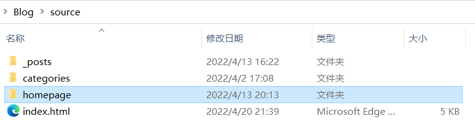
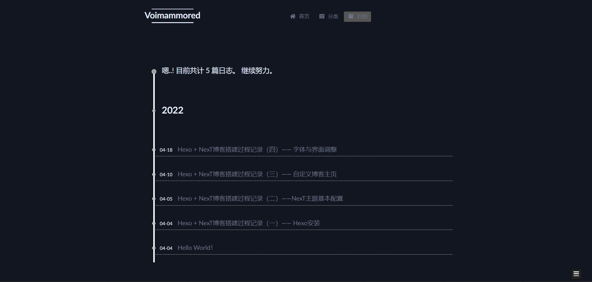

Hexo + NexT博客搭建过程记录（三）—— 自定义博客主页
自定义博客主页
NexT默认的主页是按时间倒序排列的我们的文章列表，如何上传自己写的网页作为我们的主页？
新建主页文件夹
新建一个文件夹作为储存我们未来的主页的位置，我选择在source目录下新建了一个home文件夹。

修改主页指向的位置
把站点配置文件下index_generator的path改为之前新建的文件夹的相对路径。
1
2
3
4index_generator:
path: /source/home
per_page: 10
order_by: -date
修改Home Page的路径
修改主题配置文件下目录设置menu的home：
这样一来我们的Home Page就会指向我们自定义的博客主页。1
2menu:
home: /home/ || fa fa-home
自定义主页文件
接下来就可以在home文件夹中新建index.html文件，动手设计自己的博客主页了。
当然你也可以直接把网上现成的主页模板扔进文件夹，我选择的主页模板效果如下：

最终效果
点击Notes即可进入博客，我把Notes指向了博客的归档页面。

在博客页面点击Home，就回到了我们定义的主页面。